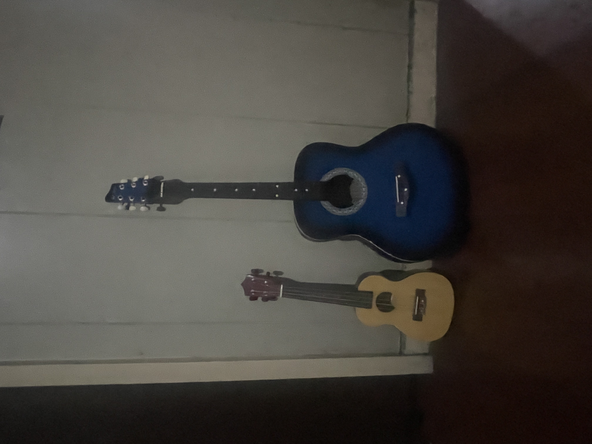
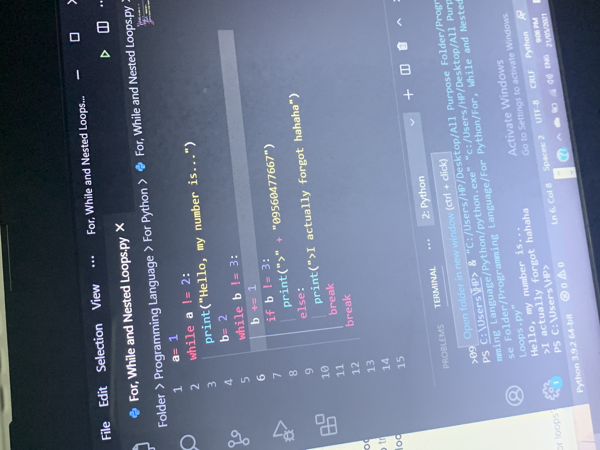
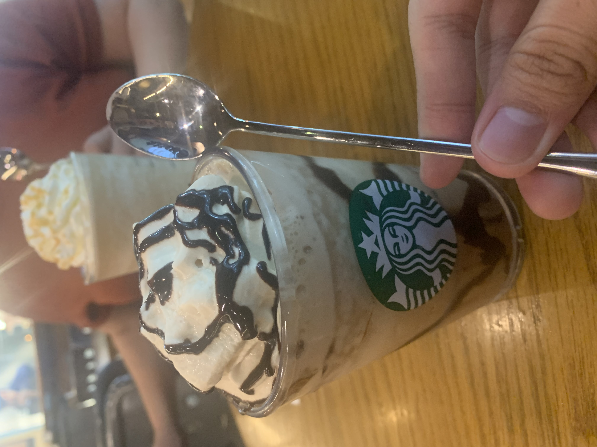
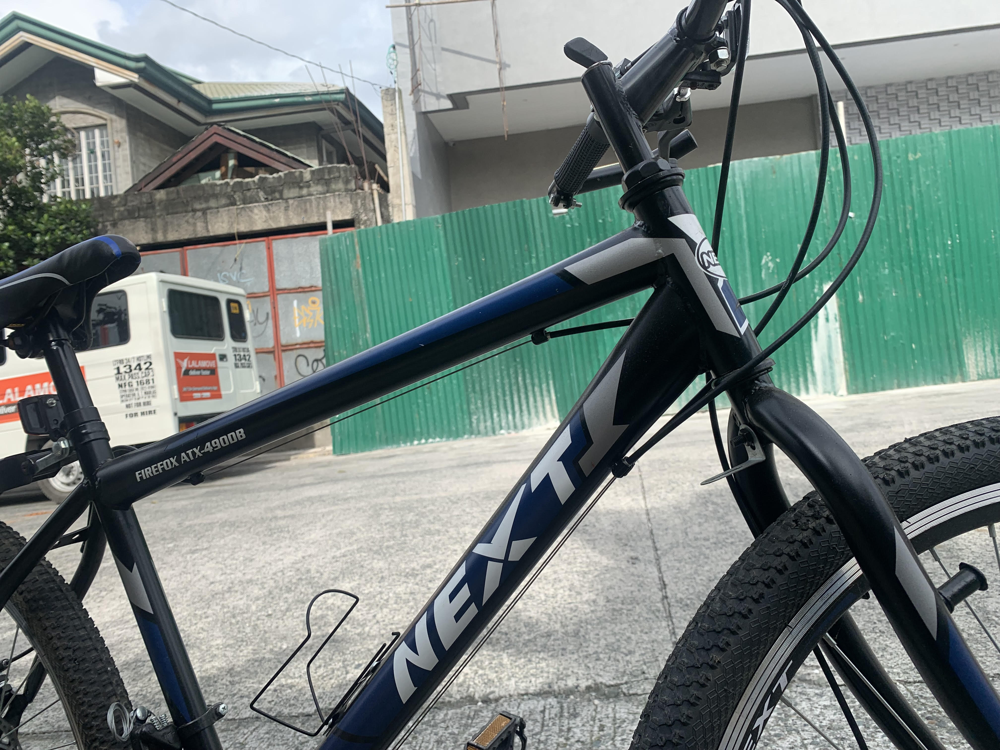

SKILLS, HOBBIES AND INTEREST
by Obcena, Kenneth George S.
I can code using the C++ language but I'm not really that good at coding with that language yet.
1
I can also code using the html langauge and code with it, however, it does not mean that I am good in it either.
2
I am studying two languages at the moment, not so difficult if you study at your own pace.
3
I am just hoping that I could choose between the two on what I would prefer to use for my future job.
4
Other than coding, I also do taekwando.
5


Of course, I stopped participating in doing taekwando way back before I was about to be a high school student.
6
At that time, I thought I needed to learn self defense in order protect myself even though my parents were there for me.
7
So, whenever I would go home, my schedule was changed in having to do taekwando after school.
8
I still remember the techniques, but my body is far from capable of doing moves now.
9
Now that I've been avoiding activities that would make me move my body alot, it got pretty difficult trying to move just like that now.
10
The things that I do on a daily basis is practicing playing the guitar or the ukulele.
1
Whenever I would do that, it gives me a peace of mind as if the bad things I had been stressing out on just disappeared
2
I've been playing the guitar ever since my first year in high school.
3
However, ever since I've been so busy with college, I couldn't get a single opportunity to practice playing the guitar anymore.
4
The schedule that I arranged back then was now full of college activities, that's why I'm also having a difficult time calming down now.
5


Whenever I do have the time to play the guitar, I would always make sure to enjoy the precious time I have with just playing a couple of songs with my guitar.
6
Other than playing the guitar, I also know how to play the piano.
7
I don't mean by the big grand piano but the mini-sized ones, a keyboard piano.
8
It's true that I do have a lot of fun playing the guitar, but playing the piano is so much different.
9
Infact, I actually prefer playing the piano because of how creative I can be while losing myself to the music.
10
I've always been interested in many things.1
Learning how to code, how to play certain instruments, how to cook like Gordon Ramsay.2
There were many things that I was interested in so it's hard to pinpoint on which one that caught my attention more.3
If I were to pick one right now, It would be the curiosity of playing the piano back then.4
I would always tell my family about wanting to perform infront of many people playing the piano.5
As a kid, the way those pro pianists moved their fingers gracefully as they press one note at a time, fast or even slow, it would always motivate me to play the piano even more.6
And it was thanks to that curiosity that I was able to type quickly since I've been playing the piano for a long time now.7
I also had a dream of wanting to be a famous person back then, a goal in life, not because I wanted the popularity, I just wanted to let people know that there are people like me where they can just do what they love the most.8
So if I wanted to be famous, I had to do something that would get the worlds attention all the while doing the things that I love.9
As I have said just now, there are a lot of interesting things I have in life that I am always curious about so it's very hard to pick just one. 10
Go back
{kind=link}
{kind=link}
{kind=link}
{kind=link}
{kind=link}